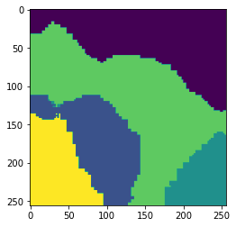

Semantic Texture Classification with Fully Convolutional Networks and Empirical Wavelet Transforms
Semantic texture classification is a known challenge for deep learning architectures.
While some architectures have been proposed that show some success, they tend to under-perform in grayscale datasets, suggesting that these networks learn color rather than texture itself.
However, a recent paper used the empirical wavelet transform as a preprocessor and fed that into the neural network.
I was curious about the effectiveness of such an approach, and so I recreated it somewhat in a collection of notebooks, found in the links below.
Links:
In these notebooks, the FCNT was trained on 900 images, while the FCNT+Empirical Curvelets was trained on only 600. Despite that, I achieved slightly improved performance combining the FCNT and Empirical Curvelets. Images of example classifications can be found below.

FCNT+Empirical Curvelet Result
Empirical Watershed Wavelet Transform Applications In Image Deconvolution/Denoising
Another application of traditional wavelet transforms is in image deconvolution/deblurring. Wavelets have traditionally been used in this domain because in practice, they are sparse representations of the image.
Empirical wavelet transforms have shown to be somewhat promising in this front.
On top of this, one can define the algorithm in such a way that the empirical wavelet transform is linear, allowing for very fast algorithms such as primal-dual optimization to be used.
The results of this project will hopefully be published soon, but the empirical watershed wavelet transform outperformed all wavelet-based deconvolution approaches we compared it to.
Links:
- (Paper and code for Primal-Dual Deconvolution in progress)
Empirical Wavelet Transform Package In Python
I coded an empirical wavelet transform package in python that is based on the existing MATLAB package. It allows for 1D and 2Dempirical wavelet transforms.
In 2D, there are multiple approaches and I have included tensor empirical wavelets, empirical curvelets (options 1, 2, and 3), Littlewood-Paley empirical wavelets, and empirical ridgelets.
Links:
Semantic Texture Classification Using Traditional Machine Learning and Empirical Wavelet Transforms (School project)
Wavelet transforms have long been used as features for capturing textures, as textures contain multi-scale information.
Since empirical wavelet transforms are still new, and their use in image applications is newer still, I was curious how they performed in a supervised semantic texture classification.
This brings its own set of challenges, as we must merge the adaptive results of multiple images.
Links:
Other Projects
I have worked on other, smaller projects during my studies.
- Total variation denoising with primal-dual optimization
- Level-set methods for boundary based segmentation